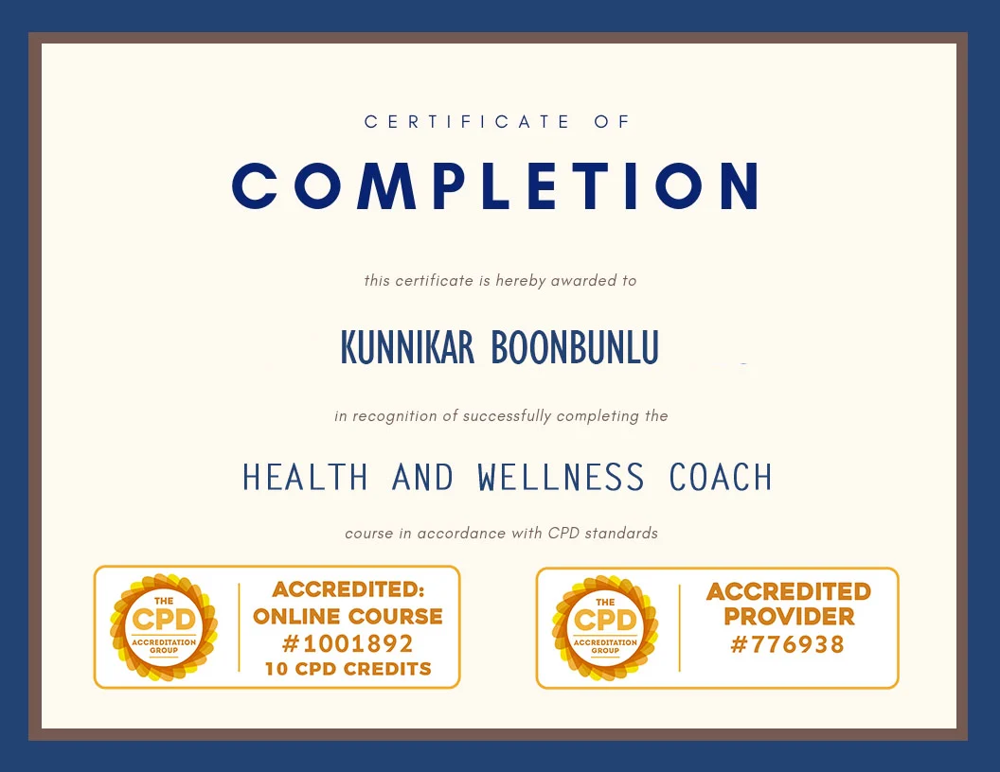
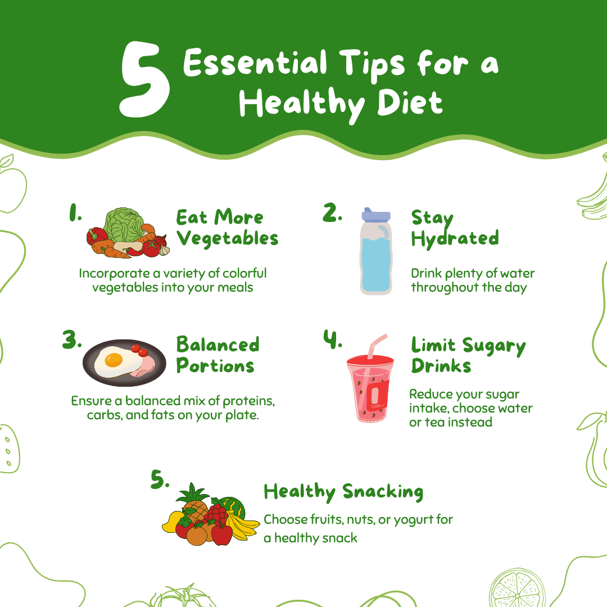
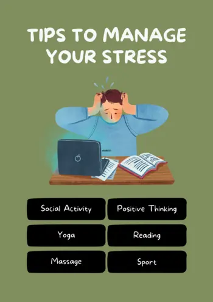
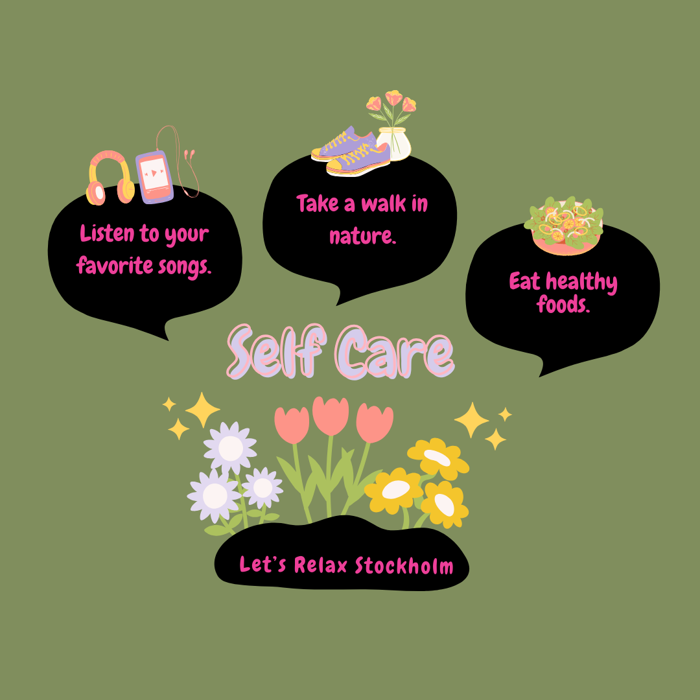
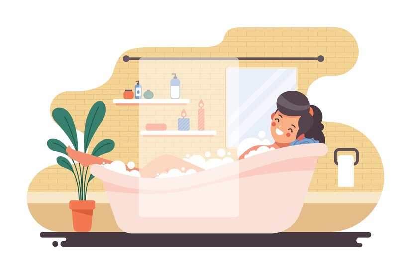
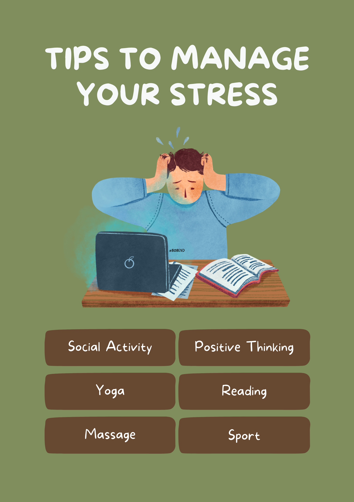

Health and Wellness
At KB Wellness Studio, I believe well-being is about more than just physical health — it's about finding balance, feeling at ease, and taking the time to listen to your body.
I want to offer you a calm and welcoming space where you can leave everyday stress behind, unwind, and enjoy a moment of care just for yourself. Through massage treatments tailored to your individual needs, I aim to help you relax, ease muscle tension, and restore your energy.
Relax. Rejuvenate. Book Now.Your Guideto a Healthier, Happier Lifestyle

Health & Wellness Tips
Health and well-being are essential parts of a happy and fulfilling life. At KB Wellness Studio, I believe in taking a holistic approach to well-being, where the body, mind, and emotions are all given the care and attention they deserve.
Take care of yourself — you deserve to feel your best. Book a massage at KB Wellness Studio and give yourself a moment of relaxation, care, and well-being.
Book Your Session

Kunnikar Boonbunlu
Wellness Coach
Here, I share tips and inspiration to help you find more balance in your daily life, take care of yourself, and create space for recovery. Small changes in your daily routine can make a big difference and help you feel better, both physically and mentally.
Latest Blog Feed
-

Maintaining a healthy diet and lifestyle is essential for overall well-being.
1. Eat a Balanced Diet:
Include a variety of fruits, vegetables, whole grains, lean proteins, and healthy fats in your meals.
Read more about Essential Tips for a Healthy Diet
-

The Science Behind Stress Relief: Why Massage Works 💆🏻♀️
1. Improved Circulation
Massage therapy stimulates blood flow throughout the body, which brings a cascade of benefits:
Read more about Why Massage Works
-

10 Simple Tips to Start Living a Healthier Lifestyle
1. Stay Hydrated
Water is essential for your body to function properly. Aim to drink at least 8 glasses a day, and more if you're active.
Read more about Self care Tips
-

9 Ways to Pamper Yourself This Weekend
1. Treat Yourself to a Relaxing Massage A soothing massage melts away stress, relieves muscle tension, and improves circulation.
Read more about Pamper Yourself This Weekend
Swipe to read more
Wellness Tips
Diet and Lifestyle Tips for a Healthy You
-
Diet Tips
Maintaining a healthy diet and lifestyle is essential for overall well-being. Here's how to optimize both for a balanced, fulfilling life:
1. Eat a Balanced Diet:
Include a variety of fruits, vegetables, whole grains, lean proteins, and healthy fats in your meals. This provides essential nutrients for energy, growth, and repair. Tip: Fill half your plate with colorful fruits and vegetables.
2. Hydration:
Drink plenty of water throughout the day to stay hydrated and support digestion. Limit sugary drinks and opt for herbal teas or infused water. Tip: Carry a reusable water bottle to track your intake.
3. Portion Control:
Be mindful of portion sizes to avoid overeating. Use smaller plates, measure servings, and listen to your body's hunger cues. Tip: Eat slowly and savor each bite to feel satisfied.
4. Limit Processed Foods:
Reduce your intake of processed foods, sugary snacks, and fast food. Choose whole, nutrient-dense foods to fuel your body and mind. Tip: Prepare meals at home using fresh ingredients.
5. Snack Smart
Choose healthy snacks like nuts, seeds, fruit, or yogurt to keep you satisfied between meals. Avoid sugary treats and opt for nutrient-rich options. Tip: Plan ahead and pack snacks to avoid unhealthy choices.
Lifestyle Tips
1. Prioritize Sleep:
Aim for 7-9 hours of quality sleep each night to recharge your body and mind. Establish a bedtime routine and create a restful sleep environment. Tip: Avoid screens and caffeine before bed to improve sleep quality.
2. Stay Active:
Incorporate physical activity into your daily routine to boost energy, mood, and overall health. Choose activities you enjoy, such as walking, yoga, or dancing. Tip: Set realistic goals and track your progress to stay motivated.
3. Manage Stress:
Practice stress-reducing techniques like deep breathing, meditation, or journaling to promote relaxation and mental clarity. Find healthy ways to cope with stress and prioritize self-care. Tip: Take breaks throughout the day to rest and recharge.
4. Set Achievable Goals:
Break down larger goals into smaller, manageable steps to stay motivated and focused. Celebrate your progress and adjust your goals as needed to maintain momentum. Tip: Write down your goals and track your progress to stay accountable.
5. Avoid Harmful Habits:
Limit alcohol consumption, avoid smoking, and steer clear of recreational drugs to protect your health and well-being. Seek support if you need help overcoming harmful habits. Tip: Replace unhealthy habits with positive alternatives to improve your quality of life.
Practical Tips
1. Meal Timing:
Eat at consistent times each day to regulate metabolism.
2. Mindful Eating:
Chew slowly, savor flavors, and avoid distractions during meals.
3. Socialize for Health:
Share meals with friends and family to enhance emotional well-being.
4. Regular Health Check-ups:
Monitor your progress with periodic health screenings.
The Science Behind Stress Relief: Why Massage Works
-

In today's fast-paced world, stress has become a constant companion for many. Whether it's due to work deadlines, family responsibilities, or the hustle of daily life, stress takes a toll on both our minds and bodies.
Fortunately, massage therapy has proven to be a powerful antidote. But why exactly does massage work? Let's dive into the science behind how massage improves circulation, reduces cortisol, and enhances relaxation.
1. Improved Circulation
Massage therapy stimulates blood flow throughout the body, which brings a cascade of benefits:
- 🩸 Oxygen and Nutrient Delivery:
As the therapist applies pressure and uses various techniques, blood vessels dilate, allowing more oxygen and nutrients to reach muscles and tissues. This rejuvenates tired and overworked areas of the body.
- 💪🏻 Enhanced removal of waste products and toxins
Improved circulation helps flush out metabolic waste products and toxins from the body. This process reduces inflammation and promotes faster recovery from injuries or muscle soreness.
- Improved lymphatic drainage and immune function
Massage stimulates the lymphatic system, which plays a crucial role in immune function. By enhancing lymphatic flow, massage helps the body eliminate toxins and pathogens more efficiently, boosting overall health.
2. Reduced Cortisol Levels
Cortisol, often called the “stress hormone,” is released during times of pressure or anxiety. While helpful in small amounts, chronic stress keeps cortisol levels elevated, leading to health issues like insomnia, weakened immunity, and weight gain. Here's how massage can help:
- 🧠 Stress Reduction:
Massage therapy triggers the release of endorphins, the body's natural painkillers and mood elevators. These “feel-good” chemicals counteract the effects of cortisol, promoting relaxation and reducing stress.
- 🧠 Lowered Blood Pressure:
By calming the nervous system and promoting relaxation, massage helps lower blood pressure and heart rate. This reduces the body's stress response and supports overall cardiovascular health.
- 🧠 Improved Sleep Quality:
Massage therapy has been shown to improve sleep quality by reducing cortisol levels and promoting relaxation. Better sleep enhances mood, cognitive function, and overall well-being.
- 🧠 Increased Serotonin and Dopamine:
Massage triggers the release of “happy hormones” like serotonin and dopamine, which counteract cortisol's effects and uplift mood. This natural mood boost can help combat anxiety and depression.
3. Enhanced Relaxation
Relaxation is more than just a state of mind—it's a physiological response that can transform your body. Massage fosters this response in several ways:
- 🧘🏻♀️ Reduced Muscle Tension:
Massage therapy targets tight, knotted muscles and fascia, releasing tension and restoring flexibility. This physical relaxation promotes mental calmness and emotional well-being.
- 🧘🏻♀️ Stress Relief:
The gentle pressure and soothing strokes of massage activate the parasympathetic nervous system, which triggers the body's relaxation response. This counteracts the “fight-or-flight” stress response and promotes a sense of calm.
- 🧘🏻♀️ Mind-Body Connection:
Massage therapy encourages mindfulness and body awareness, helping you tune into your physical sensations and emotions. This mind-body connection fosters self-awareness, stress management, and overall well-being.
Whether you're seeking relief from daily tension or simply looking to enhance your well-being, incorporating regular massages into your routine can lead to a healthier, more balanced life.
Massage is more than a luxury; it's a scientifically-backed method for stress relief that benefits both the body and mind. By improving circulation, reducing cortisol, and fostering relaxation, massage therapy provides a holistic approach to combating stress.
So the next time you're feeling overwhelmed, remember: the solution might just be in the healing power of touch. 💆🏻♀️
- 🩸 Oxygen and Nutrient Delivery:
10 Simple Tips to Start Living a Healthier Lifestyle
-
Living a healthy lifestyle doesn't have to be complicated or overwhelming. Small, consistent changes can lead to big improvements in your overall well-being. At Let's Relax Stockholm, we're passionate about helping you achieve balance in your mind, body, and daily habits. Here are 10 simple tips to kickstart your wellness journey.
1. Stay Hydrated
Water is essential for your body to function properly. Aim to drink at least 8 glasses a day, and more if you're active. Tip: Start your day with a glass of water to jumpstart hydration.
2. Move Every Day
Regular physical activity boosts energy, improves mood, and supports overall health. You don't have to spend hours in the gym—walking, yoga, or dancing all count! Tip: Aim for 30 minutes of moderate exercise daily.
3. Prioritize Sleep
Quality sleep is crucial for mental clarity and physical recovery. Create a bedtime routine that promotes relaxation, like reading or meditating. Tip: Keep your bedroom dark, quiet, and cool for better sleep.
4. Eat Whole Foods
Focus on eating a variety of fruits, vegetables, whole grains, and lean proteins. These nutrient-rich foods provide energy and support your immune system. Tip: Plan meals ahead to avoid reaching for processed snacks.
5. Practice Mindfulness
Taking a few minutes each day to focus on your breath and clear your mind can reduce stress and improve concentration. Tip: Try meditation apps or guided breathing exercises.
6. Strengthen Your Core
Core exercises improve posture, balance, and overall strength. Incorporate planks, bridges, or Pilates into your weekly routine. Tip: Join a fitness class for guided core workouts.
7. Take Breaks from Screens
Too much screen time can strain your eyes and disrupt your mental health. Step away regularly to reset. Tip: Use the 20-20-20 rule: Every 20 minutes, look at something 20 feet away for 20 seconds.
8. Stay Socially Connected
Strong relationships improve mental and emotional health. Make time to connect with friends, family, or join a community group. Tip: Schedule weekly catch-ups with loved ones.
9. Celebrate Small Wins
Achieving your goals takes time, so celebrate each step forward. Positive reinforcement keeps you motivated and focused. Tip: Reward yourself with something healthy, like a relaxing massage or a fitness class.
10. Get Regular Massages
Massage therapy reduces stress, relieves muscle tension, and improves circulation. Make it part of your wellness routine. Tip: Book a session at Let's Relax Stockholm for a personalized experience.
Book NowHealthy living is about finding balance and making choices that support your well-being. 🧘🏻♀️ Start small, stay consistent, and enjoy the journey to a healthier you. At Let's Relax Stockholm, we're here to support you every step of the way. 🫶🏻
9 Ways To Pamper Yourself This Weekend
-
1. Treat Yourself to a Relaxing Massage
A soothing massage melts away stress, relieves muscle tension, and improves circulation. Book a session at your favorite spa or wellness center and let the relaxation begin.
Book Now2. Create a Spa Experience at Home
Transform your bathroom into a mini spa! Light some candles, play calming music, and indulge in a warm bath with essential oils or bath salts. Add a face mask or exfoliating scrub for an extra treat.
3. Indulge in a Lazy Morning
Ditch the alarm and enjoy sleeping in. Follow it up with breakfast in bed—a stack of pancakes or a smoothie bowl can make your morning feel extra special.
4. Get Outside and Reconnect with Nature
Take a peaceful walk in a park, by the beach, or on a hiking trail. The fresh air and greenery will rejuvenate your mind and body. Don’t forget to unplug and leave your phone behind.
5. Enjoy a Digital Detox
Turn off your devices for the day and focus on activities that bring you joy. Read a book, journal your thoughts, or try a new hobby like painting or baking.
6. Book a Fitness or Yoga Class
Physical activity doesn't just energize your body—it uplifts your mood. Try a yoga or Pilates class to stretch and strengthen while calming your mind.
7. Savor a Delicious Meal
Cook your favorite meal at home or treat yourself to a meal at a nice restaurant. Eating something you love without rushing through it can be a truly indulgent experience.
8. Try a New Self-Care Ritual
Experiment with something new, like dry brushing, aromatherapy, or a scalp massage. These small acts of care can leave you feeling refreshed and renewed.
9. Reflect and Recharge with Quiet Time
Set aside time to meditate, journal, or simply sit in silence. Reflect on your week, list things you're grateful for, and set positive intentions for the week ahead.
Take time for yourself this weekend—you deserve it!